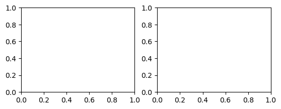
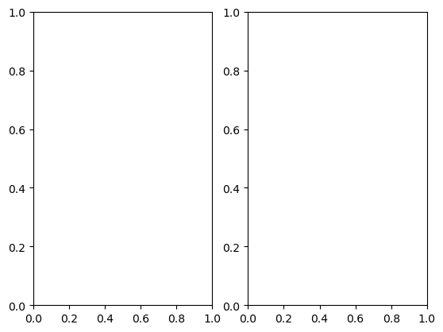
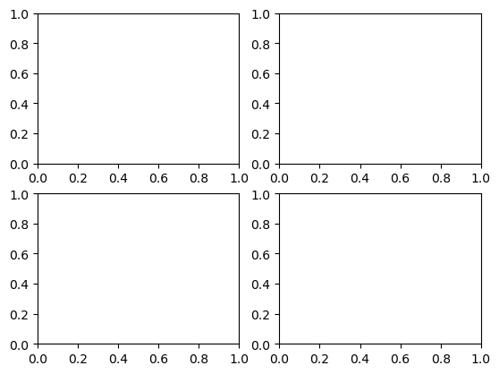
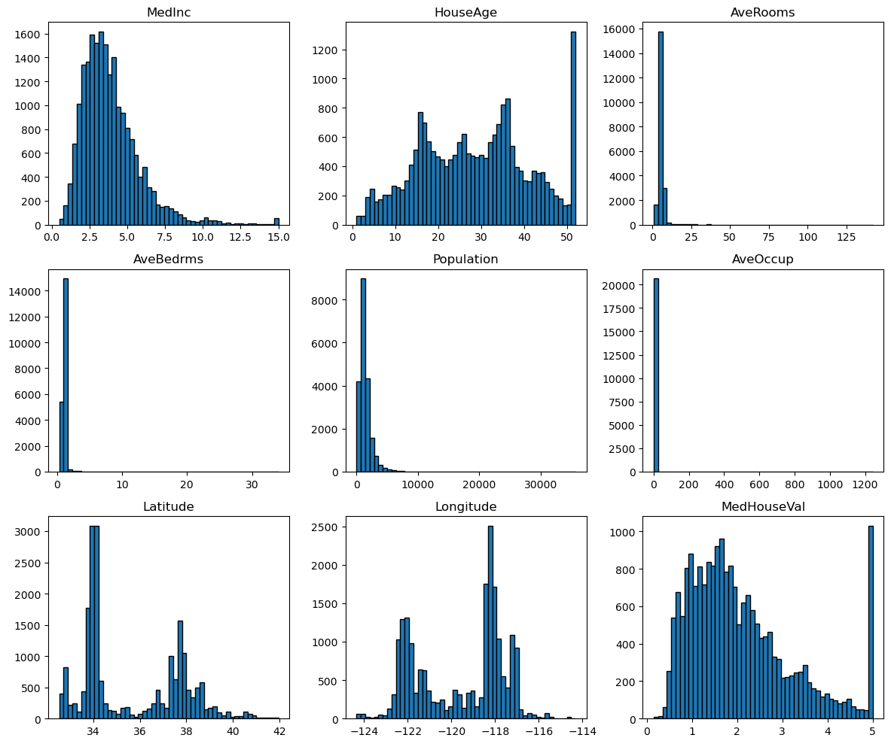

from matplotlib import pyplot as pltQuando fazemos Análise Exploratória dos Dados, talvez queiramos analisar a distribuição univariada dos atributos presentes em um conjunto de dados.
Podemos utilizar a técnica small multiplus para criar pequenos gráficos, uma para cada atributo, para compor a nossa figura. Esse subgráficos são, para o matplotlib os subplots.
Existem vários meios para construir vários gráficos em uma mesma figura que a princípio, nem eu mesmo sabia. Primeiro vamos importar a biblioteca.
Utilizando a função plt.subplot
Sabemos que os diferentes subplots que compõe uma figura podiam ser acessados utilizando a sintaxe . A funçãoplt.subplot` aceita que esses valores de linhas, colunas e indexes seja passado de duas formas:
# plt.subplot(rows columns index)
plt.subplot(221) # todo mundo junto
# ... código do gráfico 1 aqui ...
plt.subplot(2, 2, 2) # todo mundo separado
# ... código do gráfico 2 aqui ...
Esse comando significa que estamos criando uma figura com 2 linhas e 2 colunas (2 x 2 = 4 gráficos) e estamos acessando (retornando) o primeiro, o segundo, o terceiro ou o quarto gráfico, isto é, o gráfico correspondente ao valor de index.
Esse é o exemplo presente na documentação do matplotlib:
import numpy as np
def f(t):
return np.exp(-t) * np.cos(2*np.pi*t)
t1 = np.arange(0.0, 5.0, 0.1)
t2 = np.arange(0.0, 5.0, 0.02)
plt.figure()
plt.subplot(211)
plt.plot(t1, f(t1), color='tab:blue', marker='o')
plt.plot(t2, f(t2), color='black')
plt.subplot(212)
plt.plot(t2, np.cos(2*np.pi*t2), color='tab:orange', linestyle='--')
plt.show()
Utilizando plt.subplots
Sim, subplots no plural!
Já a função plt.subplots também aceita como parâmetros o número de linhas e o número de colunas da nossa figura, porém ela retorna dois objetos: um objeto do tipo Figure e um array de Axes.
No exemplo a seguir, é criado uma nova figura com dois gráficos, alinhados em uma linha e duas colunas. O array de Axes é desempacotado (unpacked) já na chamada da função.
fig, (ax1, ax2) = plt.subplots(1, 2)
Esse comando cria dois gráficos lado à lado, conforme mostrado na figura.
Nesse outro exemplo, é criado uma figura com quatro gráficos, distribuídos num grid de 2x2.
fig, axs = plt.subplots(2, 2)
A variável axs retonarda nesse caso, nada mais é que um array do numpy
print(type(axs), axs.shape)<class 'numpy.ndarray'> (2, 2)E é aqui que temos a nossa dica mágica.
Como a variável axs é um array do numpy, então nós podemos utilizar o método flatten para transformar esse array com mais de uma dimensão em um array unidimensional.
Imagine, por exemplo, que tenhamos uma dataframe com nove atributos numéricos e nós queremos analisar analisar a distribuição desses atributos separadamente.
Podemos então utilizar um padrão de código como o do exemplo a seguir:
from sklearn.datasets import fetch_california_housing
california_housing = fetch_california_housing(as_frame=True)
df = california_housing.frame
fig, axs = plt.subplots(ncols=3, nrows=3, figsize=(12, 10))
axs = axs.flatten()
for col, ax in zip(df.columns, axs):
ax.hist(df[col], bins=50, edgecolor="black")
ax.set_title(col)
plt.tight_layout()
Eu vi esse padrão de código nesse notebook do kaggle, que é parecido com esse outro aqui!
E a minha “contribuição” foi usar o enumerate ali… rsrs
Maravilha, né?
Referências
Documentação ofical do Matplotlib. matplotlib.pyplot.subplot. Disponível em https://matplotlib.org/stable/api/_as_gen/matplotlib.pyplot.subplot.html Acessado em 24 de fev. de 2023.
Documentação ofical do Matplotlib. matplotlib.pyplot.subplots. Disponível em https://matplotlib.org/stable/api/_as_gen/matplotlib.pyplot.subplots.html Acessado em 24 de fev. de 2023.
Documentação oficial do NumPy. numpy.ndarray.flatten. Disponível em https://numpy.org/doc/stable/reference/generated/numpy.ndarray.flatten.html Acessado em 24 de fev. de 2023.